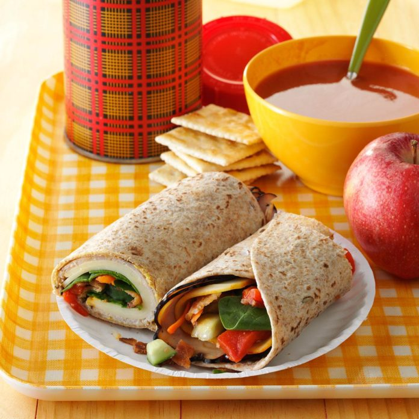

Turkey Wraps
Absolutely delectable!
Makes 2 servings
Ingredients
- 2 whole wheat tortillas (8 inches)
- 4 tsp honey mustard
- 6 oz thinly sliced deli turkey
- 2 thin slices Muenster cheese
- 1 cup fresh baby spinach
- 1 medium carrot, shredded
- 1 bacon strip, cooked and crumbled
- 1/4 cup chopped seeded cucumber
- 1/4 cup chopped roasted sweet red pepper
Instructions
- Spread tortillas with mustard. Layer each with turkey, cheese, spinach, carrot, bacon, cucumber, and red pepper; roll up tightly
Nutrition Facts
1 wrap: 345 calories
- 10g fat (3g saturated fat)
- 55mg cholesterol
- 1450mg sodium
- 36g carbohydrate (7g sugars, 4g fiber)
- 27g protein